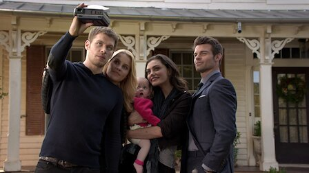

-
1. Rebirth
Klaus plots revenge against the werewolves controlling the French Quarter; Hayley mourns the loss of her daughter and
struggles with her new status.
-
2. Alive and Kicking
Klaus prods Hayley to reclaim her rank in the pack; Elijah turns to a former friend; Davina and Kaleb face danger when
uninvited guests arrive.
-
3. Every Mother's Son
A new witch arrives; Elijah grudgingly teams up with a newly turned vampire; Esther reveals a shocking secret and
unveils her plan for her children.
-
4. Live and Let Die
Davina takes Mikael to her family cabin to hide from Klaus; Hayley tries to stop Vincent from recruiting unsuspecting
teens to build a werewolf army.
-
5. Red Door
Elijah relives a love affair from the distant past; Mikael takes Cami hostage; Davina makes a troubling discovery about
Kaleb; Klaus and Mikael clash.
-
6. Wheel Inside the Wheel
Esther blackmails Klaus; Oliver lands in danger, prompting Hayley to reconnect with Jackson; Klaus is surprised by a
visitor from his past.
-
7. Chasing the Devil's Tail
Klaus hunts for an antidote to help Elijah; Aiden, Hayley, Marcel, Cami and Josh team up to defeat Vincent; Kaleb takes
Davina on a visit to his past.
-
8. The Brothers That Care Forgot
Rebekah must forfeit her quiet life with baby Hope and return to life on the run; Hayley ponders a tremendous sacrifice;
Davina turns to dark magic.
-

9. The Map of Moments
Elijah's odd behavior moves Rebekah to call a meeting that has repercussions; Cami demands answers from Vincent; Esther
finds an unlikely ally.
-
10. Gonna Set Your Flag on Fire
Hayley and Jackson try to enact a truce between the vampires and werewolves; Rebekah gets trapped inside an insane
asylum; Klaus confronts Kaleb.